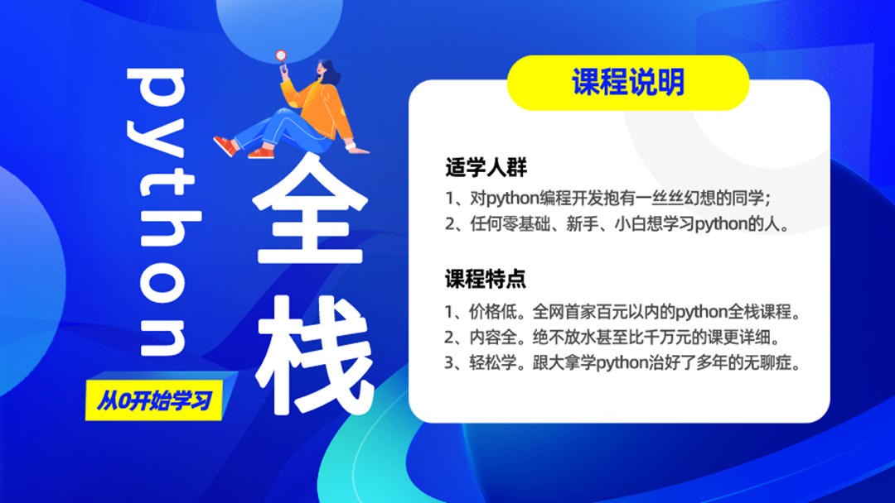
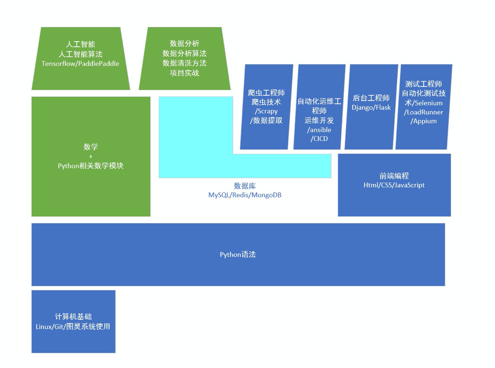

1. 开学典礼-不讲知识
1.1. 开课原因
打造一门讲解优秀，内容丰富，完整，详细的课程

1.2. 北京图灵学院介绍
讲师：刘大拿
北京图灵学院的起源：
尝试利用互联网低成本的传播优势，降低培训行业结构性成本来颠覆现状
既然培训学校不喜欢我，我就自己开一个呗
我们兄弟七个
刘大拿, 奥格斯堡大学软件硕士
许老大, 奥格斯堡大学物理硕士, 数据分析专家
梁博士, 凯撒斯劳滕大学数学博士, 金融风控专家
目标：
以免费模式为主，利用互联网的低成本高传播特性，打造一门牛掰的课程
课程免费，服务适当收费
普及python
本次课程目标：
2018初的免费python全栈开行业先河
2020年升级课程，瞄准小白用户，慢功夫，从0基础开始直到大牛全程守护
面向小白
毕业达到工作两年经验水准
课程高质量
2022年, 录播反复学习, 直播答疑+鲜活展示, 对于网络乞讨者, 点赞很重要
1.3. 课程体系
Python领域的几大方向
游戏
后台+爬虫
数据科学
AI
自动化测试，自动化运维，自动化办公
Python体系结构怎么学

如何选择
学历: 985/211不要犹豫，直接数据科学+AI
兴趣： 爬虫比较有趣，后台需求量大
1.4. Python市场
python为什么火
由需求引发的市场
相对比较简单，面对中小企业和原PHP市场还有巨大需求
要不要学
Python是很好的教学课程，市场已经做出了选择
Python应用广泛，功能强悍
与其做Java的牛尾，干嘛不做Python的鸡头
1.5. 学习方法
齐心正义, 提高
师从性:动力源于相信，相信自己，相信老师
学习是系统工程，拒绝碎片知识，欲速则不达
小课对于基础学员弊大于利，不能求速成
慢就是快，Python就这点知识，吃透一个学下一个，很快
学会搭建自己的知识体系,拒绝碎片知识
知识+习题， 知识点和习题相互促进，早日形成正向刺激
正向刺激对每一个学习者都是学有所成的前提
Python属于实践性科学，需要大量练习辅助学习
习题课中直接讲实战代码，补充附加知识
报名习题课加微信13119144223或进qq群9990960找管理
习题课专业答疑，24小时在线
好记性+烂笔头+勤能补拙=blog+git=终身学习=我学我用我输出
跟老师一起学习，同时学习搭建自己的知识体系
在未形成输出型知识前，不算真正掌握知识
博客网站，Github, 注册并尝试发表内容
知乎: 刘大拿
qq群+微信=进入组织=QQ群9990960， 微信13119144223
提问的技巧
有问题QQ群提问，微信群只吹水
提问请贴图，不要发代码拷贝
笔记地址：
红宝书教程网: http://www.baoshu.red